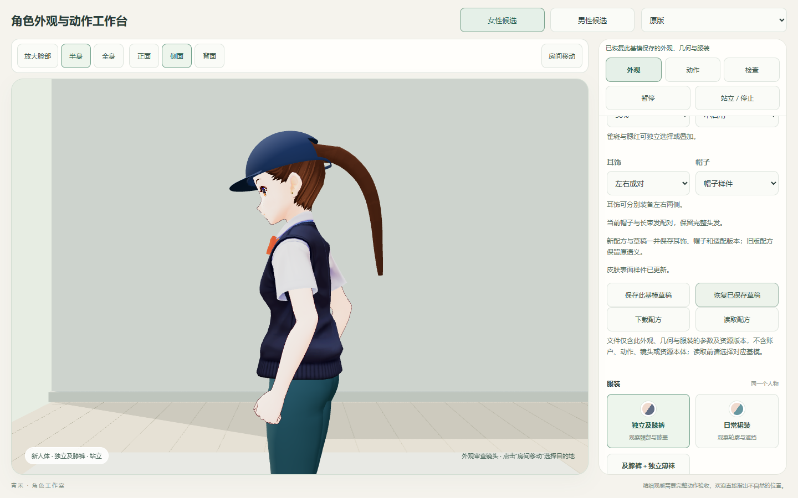
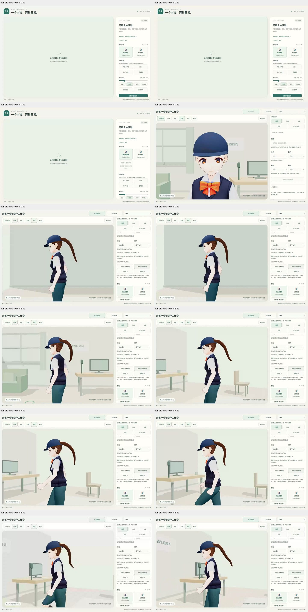
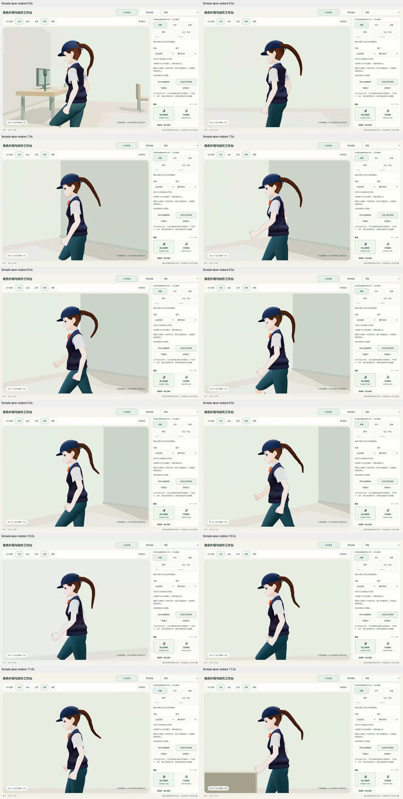
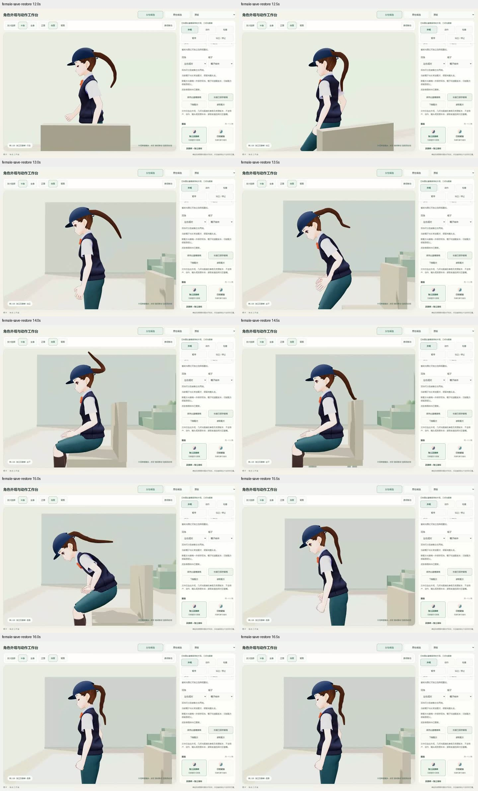
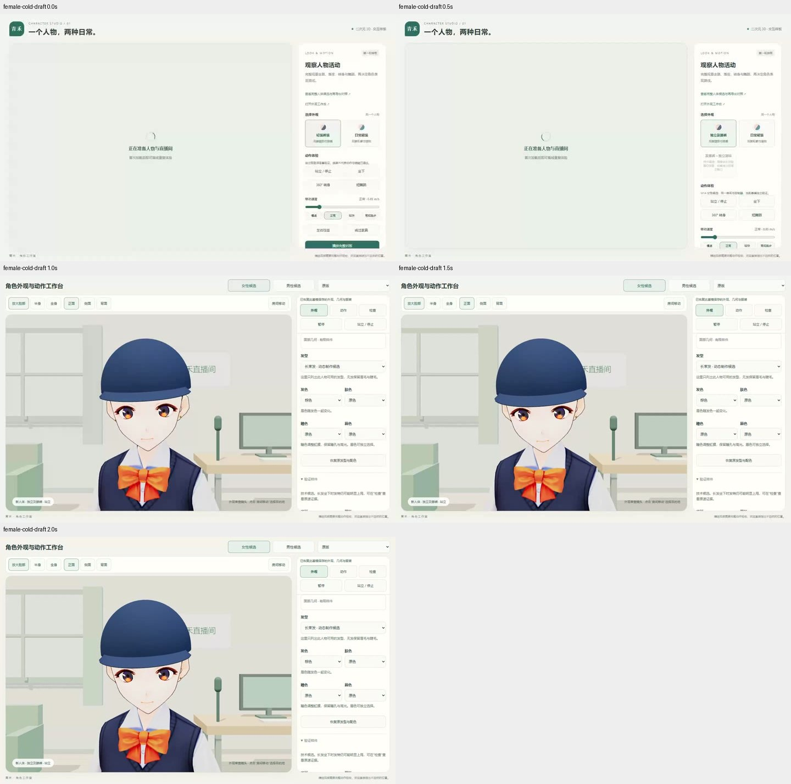
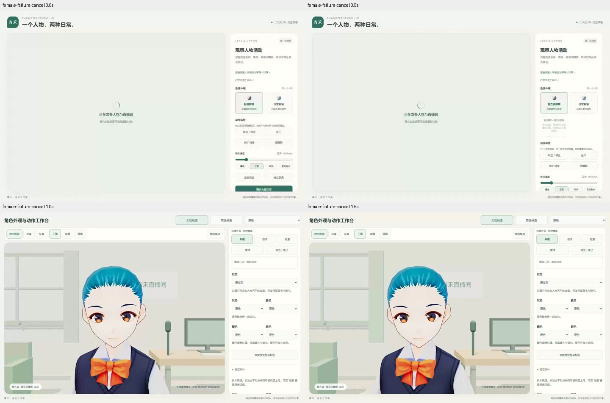
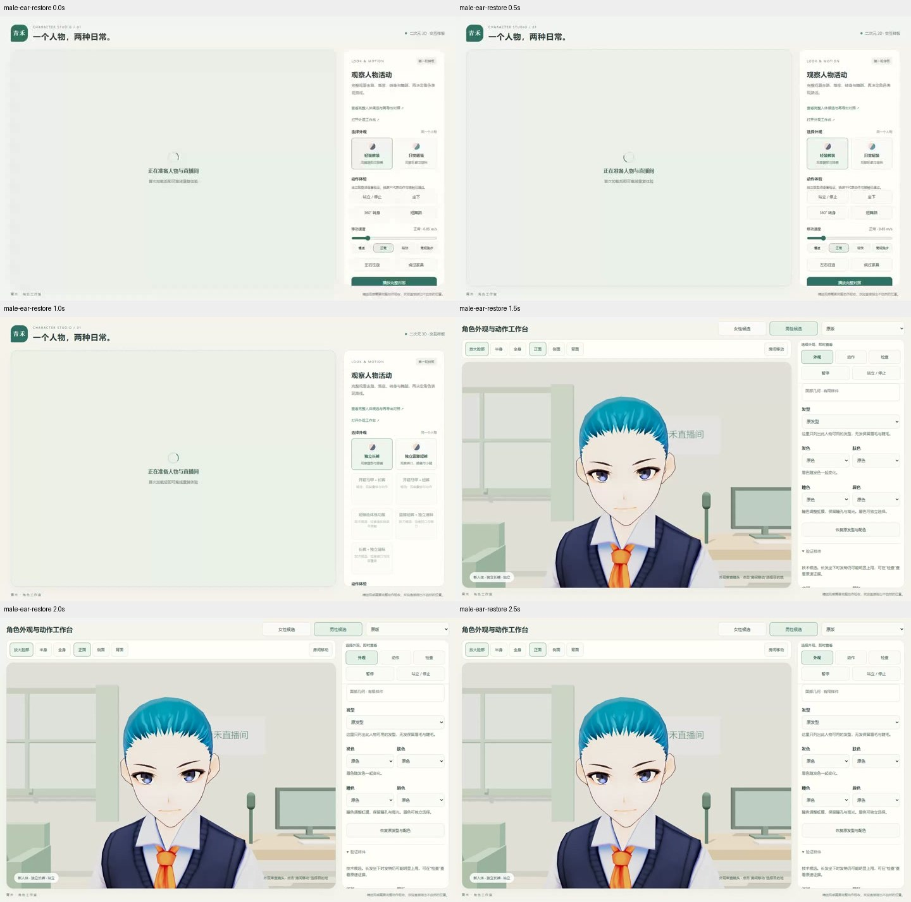

构建 785be36def90 · 源码 23c1140a01d26b6f1c10ac4f8064f366add3ba17 · 观感待审。
四个会话分别记录女性保存与恢复、关闭上下文后的草稿恢复、故意失败与取消注入、男性右耳恢复及对照实例隔离。每个会话都核对实际运行构建和主角色 SHA。
v8 保存帽子、耳饰与 surface 选择。麦克风、眼镜以及独立主播身份记录尚未纳入这个记录合同。
长发坐入时上甩问题仍保留。女裙与旧舞蹈沿封板版本参与观察，其既有缺陷记录继续有效。失败注入片展示资源缺失、延迟及较新请求取消的处理，不能据此判定动作自然度。
四条原片完整保留，默认 1×、加载起点独立。观感与普通电脑验证仍待完成。
原始浏览器报告 · 实际执行脚本 · 女性实际 v8 配方 · 男性实际 v8 配方 · 每会话身份、源 SHA 与完整抽帧索引
会话 female-save-restore · 构建 785be36def90 · 主角色 beta-base-female-m1 · SHA 027bed60dd7ae1b77d3dbaeabe682d69b09ea39dc36151d862a5e0c58bcd5b95




会话 female-cold-draft · 构建 785be36def90 · 主角色 beta-base-female-m1 · SHA 027bed60dd7ae1b77d3dbaeabe682d69b09ea39dc36151d862a5e0c58bcd5b95

会话 female-failure-cancel · 构建 785be36def90 · 主角色 beta-base-female-m1 · SHA 027bed60dd7ae1b77d3dbaeabe682d69b09ea39dc36151d862a5e0c58bcd5b95

会话 male-ear-restore · 构建 785be36def90 · 主角色 beta-base-male-m1b · SHA 62b44b0372570a821695d236cd412ddf902b6f683023e13fef7293de9c0b35ff
